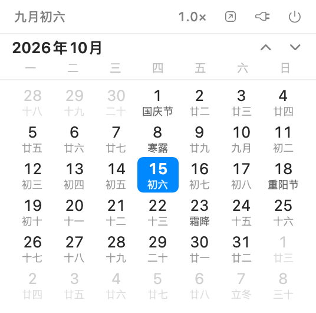
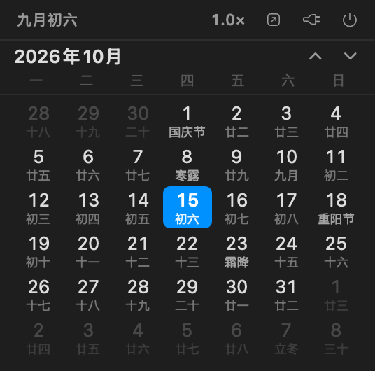

点一下弹出、连续滚动、一屏一个月。带农历、二十四节气和节日的原生 macOS 菜单栏日历。
未做 Apple 公证，首次打开请右键点 App → 「打开」，或执行
xattr -dr com.apple.quarantine /Applications/ScrollCal.app
一屏正好一个月，滚轮/触控板可以一路滚下去，每格下面是农历、节气或节日。


够用就好，不做多余的事。
系统小组件只能显示固定一个月。ScrollCal 可以前后滚 61 个月，顶部年月自动跟随。
视口高度正好一个月的高度，滚动的边界感很清楚，不会停在半格上。
右上角 1.0× 一点即切：0.2× / 0.3× / 0.5× / 0.8× / 1.0× / 1.5× / 2.0× / 3.0×，鼠标和触控板各调各的手感。
每格下方小字，优先级：公历节日 → 农历节日 → 除夕 → 二十四节气 → 农历初一（显示月名）→ 农历日。
前后补位不是留空，跨月看几天很方便，又不会喧宾夺主。
纯 SwiftUI + AppKit，无第三方依赖、无任何网络请求，也没有 Dock 图标。开机自启用系统原生 SMAppService。
下载后三步即可用上。
ScrollCal-x.y.dmg（或 .zip）。ScrollCal.app 拖进「应用程序」。📅 图标。xattr -dr com.apple.quarantine /Applications/ScrollCal.app。
| 位置 | 功能 |
|---|---|
| 第一行左 | 农历今日（如 八月初八），点击回到本月，快捷键 ⌘T |
| 第一行右 | 滚动倍率 · 打开「日历」App · 开机自启 · 退出 ⌘Q |
| 第二行 | 当前年月 + ▲ ▼ 精确翻月 |
| 日历区 | 滚轮 / 触控板连续滚动 |
只需要 Xcode Command Line Tools，不需要完整 Xcode。
git clone https://github.com/KatouMegumii/ScrollCal.git
cd ScrollCal
./build.sh # 编译并打包到 build/ScrollCal.app
./install.sh # 可选：装到 /Applications 并重启仓库里还带了三个开发工具：
| 工具 | 用途 |
|---|---|
Tools/CalendarDump | 命令行打印某月网格，校验农历 / 节气 / 节日 |
Tools/Preview | 离屏把面板渲染成 PNG，改样式时不用点菜单栏 |
Tools/make-icon.sh | 生成 App 图标（iconset → icns） |
不查表、不联网、不依赖第三方库。
Foundation 内置的 Chinese calendar 换算，含闰月判定。
自实现 Meeus《Astronomical Algorithms》低精度太阳视黄经求解，精度约 0.01°（约 15 分钟）。
公历固定节日 + 按星期推算（母亲节 / 父亲节 / 感恩节）+ 农历节日 + 除夕。